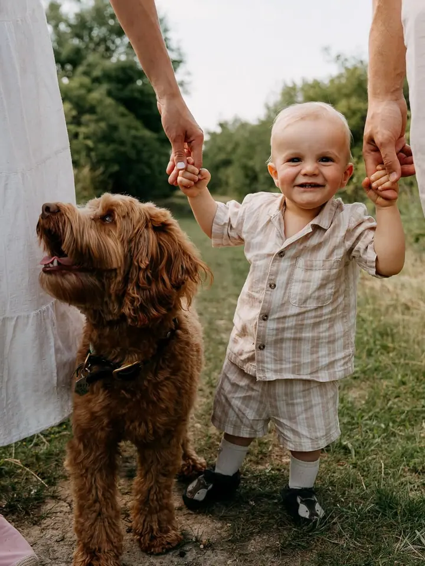
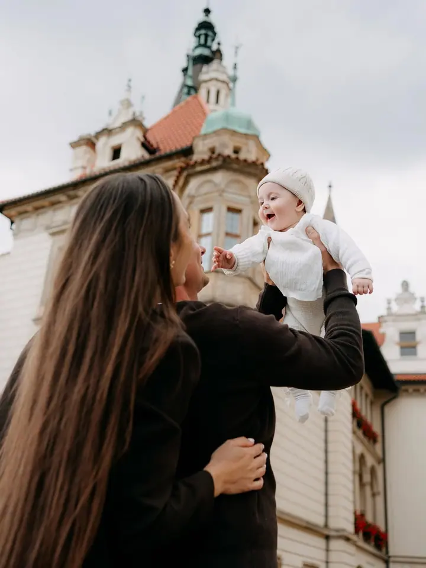
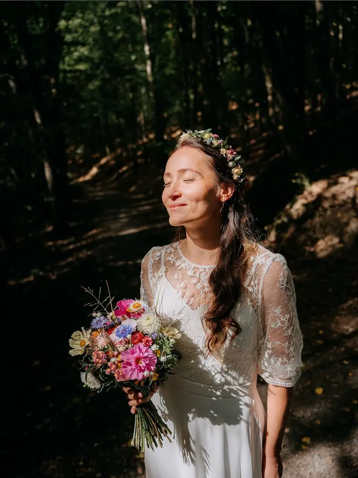
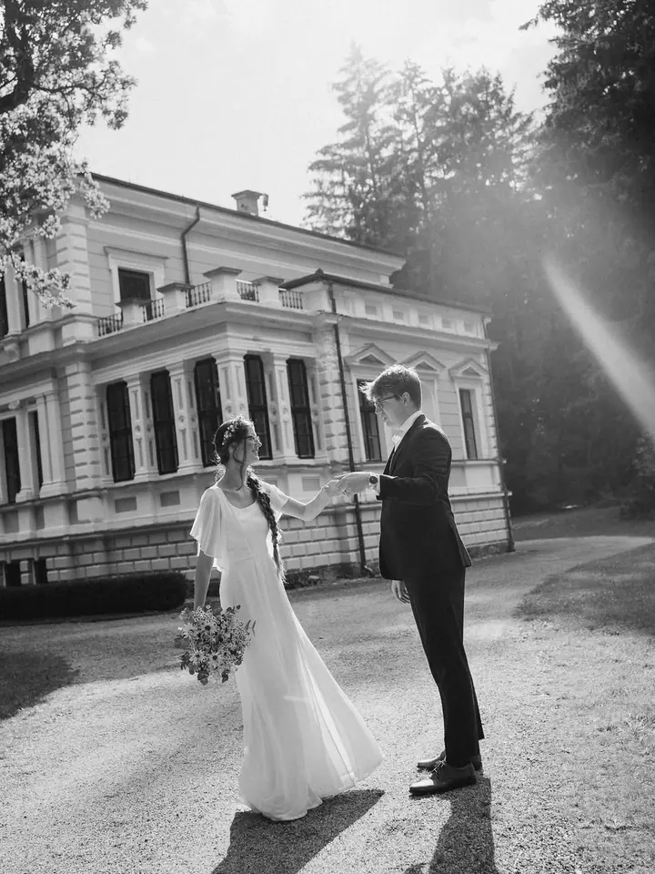

Rodinné příběhy
Rodinné focení venku nebo u vás doma, s přirozeným světlem a jednoduchým vedením. Fotky, na kterých nejsou jen děti, ale i vy.

Jmenuji se Michaela a jsem rodinná a svatební lifestyle fotografka z Prahy. Nejraději fotím maminky, od těhotenských portrétů přes první chvíle po porodu až po život cel…
Rezervovat termínKe každému focení přistupuji individuálně, podle toho, co máte rádi a kde se cítíte dobře. Ráda vám pomohu vybrat místo s nejhezčím světlem. Nejraději fotím venku v přírodě, ideálně hodinu před západem slunce, ale stejně ráda přijdu k vám domů, kde často vznikají ty nejopravdovější momenty.


Záleží mi na tom, abyste si focení užili a cítili se uvolněně. Když děti zrovna nemají náladu spolupracovat, nevadí. Dávám prostor přirozenosti, takže se nikdo nemusí na povel usmívat. Chci, abyste si odnesli fotky plné vaší energie a emocí, které budete mít rádi i po letech.
Fotím také svatby, převážně reportážním stylem. Snažím se splynout s hosty a zachytit den takový, jaký opravdu byl. Zároveň jsem po ruce, když je potřeba poradit, kam se postavit nebo kam se dívat.
Co fotím
Rodinné focení venku nebo u vás doma, s přirozeným světlem a jednoduchým vedením. Fotky, na kterých nejsou jen děti, ale i vy.
Focení fresh48 probíhá přímo v porodnici, nemusíte nic chystat ani řešit. V klidu zachytím první společné chvíle, nebo vaše miminko vyfotím v pohodlí domova.
Těhotenské focení venku nebo u vás doma. Vzpomínka na období, které je krásné a zároveň netrvá věčně.
Svatby fotím převážně reportážním stylem. Soustředím se na průběh dne, vztahy mezi lidmi a celkovou atmosféru.
Postup
Napište mi přes formulář a společně najdeme termín, který vám vyhovuje. Termín rezervujete zálohou 500 Kč.
Před focením spolu doladíme lokaci a poradím vám s oblečením, aby fotky působily sladěně a přirozeně. Když onemocníte nebo nebude přát počasí, termín bez stresu přesuneme.
Focení často probíhá formou procházky, v klidu a bez nátlaku. U vás doma fotím reportážně, jak si hrajete, vaříte nebo se mazlíte.
Do zhruba 3 dnů vám pošlu náhledovou galerii, ze které si vyberete oblíbené fotky. Hotovou galerii ode mě dostanete do 2 týdnů.
Otázky
Nejraději venku v přírodě, ideálně hodinu před západem slunce. Mám osvědčená místa podle ročního období, ale ráda s vámi proberu i místo, ke kterému máte vztah. Fotit můžeme také ve městě nebo u vás doma.
Vlastní ateliér nemám, ale v pronajatém ateliéru fotit můžeme. Pronájem se platí zvlášť. V Praze mám dobré zkušenosti například s ateliéry Factory nebo Fotogram ve Strašnicích a s výběrem i rezervací vám ráda poradím.
Přijdu přímo do porodnice, vy nemusíte nic chystat ani řešit. Přizpůsobím se situaci a v klidu zachytím první společné chvíle. Miminko můžeme vyfotit také u vás doma.
Rodinné, těhotenské a párové focení začíná na 3 200 Kč za 15 upravených fotek, fresh48 v porodnici na 3 500 Kč. Svatební balíčky jsou od 7 000 Kč. Neupravené fotografie neposkytuji.
Ano, dárkové poukazy vystavuji. Stačí mi napsat a domluvíme se na variantě, která vám bude vyhovovat.
